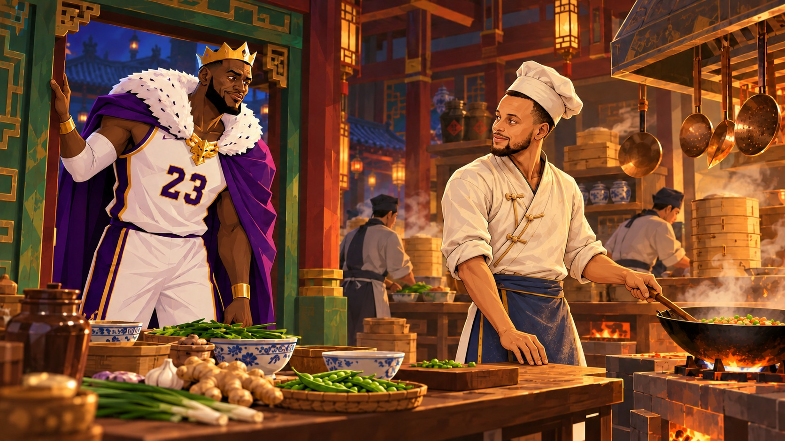

The Jade Court · Story draft
The Chef’s Table
4 min read
A familiar face in the royal kitchens.
King Poon’s first meeting with Chef Curry.

King Poon had learned enough about palace life to know that if he asked for a snack, someone would ring a bell.
By the time the stewards finished discussing what to serve, a snack would have become a banquet.
Tonight, he followed the smell himself.
Shen caught up with him at the kitchen stairs.
“There is a meal being prepared for you upstairs.”
“Then we should save somebody the walk.”
Below them, ladles rang against iron and steam drifted through an open doorway. A calm voice carried over the clatter: “Bowls ready. This batch goes out hot.”
Poon ducked beneath the lintel.
The royal kitchen stretched between rows of brick stoves. Bamboo steamers rose in towers beside the worktables. Copper ladles hung above ceramic jars, and a young cook was carrying a tray with the concentration of a man transporting a sleeping tiger.
At the center of it all stood a slender figure in a cream wrap-front tunic and a flour-dusted indigo apron. A soft white chef’s hat leaned slightly to one side.
Without looking away from the pan in front of him, the chef flicked a folded cloth across the aisle. It landed neatly over the handle of a hot pot just as an assistant reached for it.
“Use that.”
Poon stopped.
The wrist. The easy balance. Then the chef turned, and Poon saw the face beneath the hat.
“You have got to be kidding me.”
The kitchen fell quiet. The young cook froze with his tray.
The chef looked from the king to the pan.
“If this is about the ginger, I can explain.”
“Curry?”
“Yes, Your Majesty.”
Poon glanced at Shen, who gave him a small, patient nod.
“Our head cook,” the minister said. “I believe you have been enjoying his work.”
“Stephen?” Poon asked.
The chef frowned. “Just Curry. Have we met?”
For a moment, Poon heard a crowd roaring at a shot he had been certain was too far from the basket. He remembered chasing this face around screens, watching the ball rise, knowing before it fell that he was going to have a very long evening.
Then a lid rattled on the stove, and Curry turned to lower the flame.
Shen had looked familiar too. Poon was beginning to suspect that recognition would be easier here than explanation.
“You remind me of someone,” he said.
“Good cook?”
“Difficult man to guard.”
Curry considered that. “The pantry steward says much the same.”
The young cook laughed, then pretended to cough. Work resumed around them.
Curry pointed to a stool at the end of the table. “If you’re hungry, sit there. If you’re inspecting, give me ten minutes.”
Poon sat.
Shen remained standing until Curry set a second bowl beside the first.
“Yours will get cold at the same speed, Minister.”
That settled it.
The broth smelled of ginger and toasted sesame. Poon lifted a spoon, tasted it, and took another before saying anything.
Curry watched him for half a second, then returned to arranging a tray.
“You knew I’d like it.”
“You’ve sent back an empty bowl three nights running.”
“You keep track?”
“Of what people eat? Fairly important part of the job.”
A kitchen runner arrived with a message: the visiting delegation had brought eight more guests. Curry counted the portions on the tray, asked for another steamer, and sent two assistants to the store cupboard. He moved a smaller pot off the fire before anyone could take from it.
“That stays. Night watch hasn’t eaten.”
Poon watched the kitchen rearrange itself around the extra demand. Every instruction freed someone else to move. Curry seemed to know where the next pair of hands would be before they arrived.
“You run a good team.”
“They’re better when I feed them.”
Poon looked down at his nearly empty bowl. “I’m available.”
Curry put a basket of peas in front of him.
Shen lowered his head over his soup.
“Something funny?” Poon asked.
“No, Your Majesty. An excellent appointment.”
By the time the extra trays left the kitchen, Poon had shelled half the basket and learned which assistant could identify spices with her eyes shut. Curry finally untied his apron and sat opposite him.
On a shelf behind the chef, between two cookbooks, Poon noticed a narrow game box. Its corners had been repaired with cloth.
“That yours?”
Curry followed his glance. “For after service.”
“Any good?”
“The game?”
“You.”
The chef smiled. There it was again: that infuriating little suggestion that he knew something Poon was about to find out.
Shen set down his spoon.
“Before you offer to play for anything, Your Majesty, the kitchen supplies its own tournament team.”
“And?”
“They won the winter cup.”
Curry reached for the box.
Poon pushed the empty bowls aside, careful this time to leave room between them.
“I’ll finish the peas,” he said. “Then you can show me.”